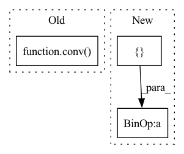

Pattern ID :41822
Before Change
conv_prg([C.bs*C.groups*C.rcout, C.oy, C.ox], None, x.cl, w.cl, ret.cl, *[i32(x) for x in list(C[0:12])+[C.dx, C.dy, C.px, C.py]])
def processing_op(op,a,b,ret,C):
if op == ProcessingOps.CONV: conv( a,b,ret,C)
After Change
output[B*groups*rcout*oy*ox + g*rcout*oy*ox + c*oy*ox + Y*ox + X] = acc;
})
conv_prg([C.bs*C.groups*C.rcout, C.oy, C.ox], None, x.cl, w.cl, ret.cl, *[i32(x) for x in list(C[0:12])+ [ C.dx, C.dy, C.px, C.pyIn pattern: SUPERPATTERN
Frequency: 3
Non-data size: 3
Instances Fragment ID: 117234238
Project Name: geohot/tinygrad
Commit Name: bcfbb4c81bce9e8ccd87d8b8fed6f56d3a69e741
Time: 2022-06-15
Author: geohot@gmail.com
File Name: tinygrad/llops/ops_gpu.py
M Class Name: AnonimousClass
N Class Name: AnonimousClass
M Method Name: processing_op(5)
N Method Name: processing_op(5)
M Parent Class:
N Parent Class:
M File Name: tinygrad/llops/ops_gpu.py
N File Name: tinygrad/llops/ops_gpu.py
M Start Line: 162
M End Line: 162
N Start Line: 127
N End Line: 157
Before Change
for i, conv in enumerate(self.inter_convs):
out = F.interpolate(inters[-1], scale_factor=2., mode="nearest") // resize(P7td)
out = self.fuse([x[-2-i], out]) // P6in + resize(P7td)
inters.append(conv( out) ) // P6td = conv(P6in + resize(P7td))
// bottom-up
inters = inters[::-1] // feature maps from bottom to top, same order as input xAfter Change
tds[i] = self.td_fuses[i]([x[i], self.upsample(tds[i+1])]) // P6td = conv(P6in + resize(P7td))
// bottom-up
outs = [ None * self.num_levels
outs[0] = tds[0]
for i in range(self.num_levels - 2):
outs[i+1] = self.out_fuses[i]([x[i+1], tds[i+1], self.downsample(tds[i])]) // P4in + P4td + resize(P3td) Fragment ID: 117234234
Project Name: gau-nernst/vision-toolbox
Commit Name: 0844b6bcb142e63b09cf6ae44e5087c20d52c380
Time: 2022-04-10
Author: gau.nernst@yahoo.com.sg
File Name: vision_toolbox/necks.py
M Class Name: BiFPNLayer
N Class Name: BiFPNLayer
M Method Name: forward(2)
N Method Name: forward(2)
M Parent Class: nn.Module
N Parent Class: nn.Module
M File Name: vision_toolbox/necks.py
N File Name: vision_toolbox/necks.py
M Start Line: 163
M End Line: 180
N Start Line: 160
N End Line: 172
Before Change
if "res" in self.mode:
x1 = x1 + from_up
for idx, conv in enumerate(self.conv2):
x2 = conv( x1)
x2 = self.bn[idx](x2)
if self.residual:
x2 = x2 + x1After Change
// residual structure
_,C,H,W = x1.shape
for idx, convs in enumerate(zip(self.conv2, self.conv3)):
mask = convs[0](torch.cat([ x1[:,:C//2], mask + x2_actv)
x2 = self.bn[idx](x2)
if self.residual:
x2 = x2 + x1 Fragment ID: 117234228
Project Name: bcmi/slbr-visible-watermark-removal
Commit Name: 43e84b70895d28955496122816e50857863e5bfd
Time: 2022-01-04
Author: lj200820082007@163.com
File Name: src/networks/blocks.py
M Class Name: MBEBlock
N Class Name: MBEBlock
M Method Name: forward(4)
N Method Name: forward(4)
M Parent Class: nn.Module
N Parent Class: nn.Module
M File Name: src/networks/blocks.py
N File Name: src/networks/blocks.py
M Start Line: 244
M End Line: 260
N Start Line: 254
N End Line: 267